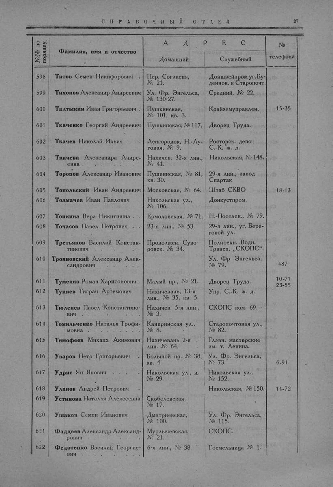

Лист источника 75
Скан

Распознанный текст
СПРАВОЧНЫЙ ОТДЕЛ 27
№№ по
порядку Фамилия, имя и отчество А Д Р Е С №
телефона
Домашний Служебный
598 Титов Семен Никифорович . Пер. Согласия,
№ 21. Доншвейпром уг. Бу-
деннов. и Старопочт.
599 Тихонов Александр Андреевич Ул. Фр. Энгельса,
№ 130/27. Средний, № 22.
600 Талтыкин Иван Григорьевич . Пушкинская,
№ 101, кв. 3. Крайземуправлен. 15-35
601 Ткаченко Георгий Андреевич Пушкинская, № 117. Дворец Труда.
602 Ткачев Николай Ильич . . Ленгородок, Н.-Лу-
говая, № 9. Ростовск. депо
С.-К. ж. д.
603 Ткачева Александра Андре-
евна . . . . . . . Нахичев. 32-я лин.,
№ 41. Никольская, № 148.
604 Торопов Александр Иванович Пушкинская, № 81,
кв. 30. 29-я лин., завод
Спартак
605 Топольский Иван Андреевич Московская, № 64. Штаб СКВО 18-13
606 Толмачев Иван Павлович Никольская ул.,
№ 106. Донкустпром.
607 Топкина Вера Никитишна . Ермоловская, № 71. Н.-Поселен., № 79.
608 Точасов Павел Петрович . . 23-я лин., № 53. 29-я лин., уг. Бере-
говой ул.
609 Третьяков Василий Констан-
тинович Продолжен. Суво-
ровск. № 34. Политехн. Водн.
Трансп. „СКОПС“.
610 Трояновский Александр Алек-
сандрович Ул. Фр. Энгельса,
№ 79. 487
611 Туменко Роман Харитонович . Малый пр., № 21. Дворец Труда. 10-71
612 Туниев Тигран Артемович Нахичевань, 13-я
лин., № 35, кв. 5. Упр. С.-К. ж. д. 23-55
613 Тюленев Павел Константино-
вич Нахичев. 5-я лин.,
№ 3. СКОПС ком. 69.
614 Томильченко Наталья Трофи-
мовна . . . . . . Канкринская ул.,
№ 8. Старопочтовая ул.,
№ 82.
615 Тимофеев Михаих Акимович Нахичевань 2-я
лин. № 64. Главн. мастерские
им. т. Ленина.
616 Уваров Петр Григорьевич . Большой пр., № 38,
кв. 4. Ул. Фр. Энгельса,
№ 73. 6-91
617 Удрис Ян Янович . . . . Никольская ул., д.
№ 29. Никольская ул.,
№ 152.
618 Уланов Андрей Петрович . Никольская, № 150. 14-72
619 Устинова Наталья Алексеевна Скобелевская,
№ 17.
620 Ушаков Семен Иванович Дмитриевская,
№ 100. Ул. Фр. Энгельса,
№ 115.
621 Фаддеев Александр Александ-
рович Мурлычевская,
№ 21. СКОПС.
622 Федотенко Василий Георгие-
вич . . . . . . . 6-я лин., № 38. Госмельница № 1.